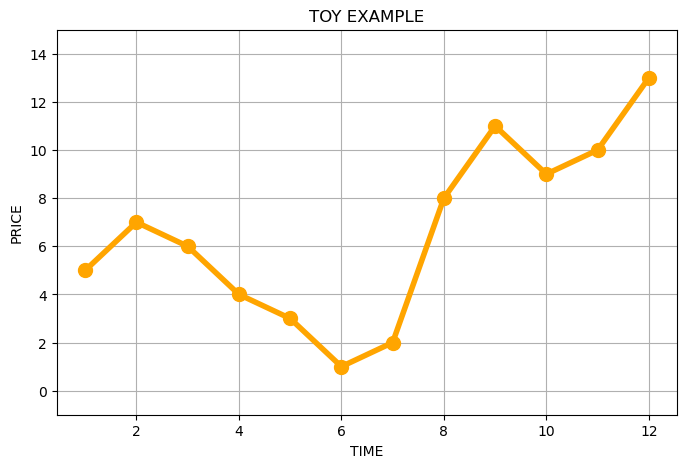
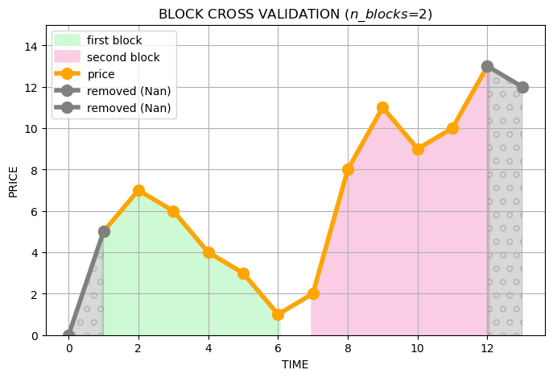

Toy Example
Data
Let’s imagine that we have the following time series.
{kind=link}
Block Cross Validation
Block cross-validation works as follows: we divide the whole time series into equal blocks counting some attributes (target and lag) before doing so. In the case of two blocks we will get the following picture:
{kind=link}
After that we need to generate traits using the tsfresh library. To get the value of a trait, we need to apply some
transformation to the whole time series. To do this, we will take the last few values of the time series (window) at
each time point, and apply the transformations to them. In this way we will get a large number of new features.
{kind=link}
This is done using the function extraction_utils.bcv_extract_features().
Stats Selection
Then we need to understand which of the generated features are really important. To do this, we will combine the
information for all blocks into one table, and measure its statistical significance for each feature. After that,
we leave only uncorrelated relevant features with the highest p_value.
Statistical significance is obtained using method selection_utils.get_stats(), and the selection of the best
uncorrelated features using selection_utils.stats_select_features().
Importance Selection
On the selected features and built blocks, we can train models and calculate the importance of each feature. Then we will take the features with the highest importance until we get 80% of all importance.
We got the desired set!
Remarks
To take into account the context (the presence of other time series, see the second part of the Algorithm)
To see what data tsfresh generates and how it is transformed during the selection - see the toy_example_notebook